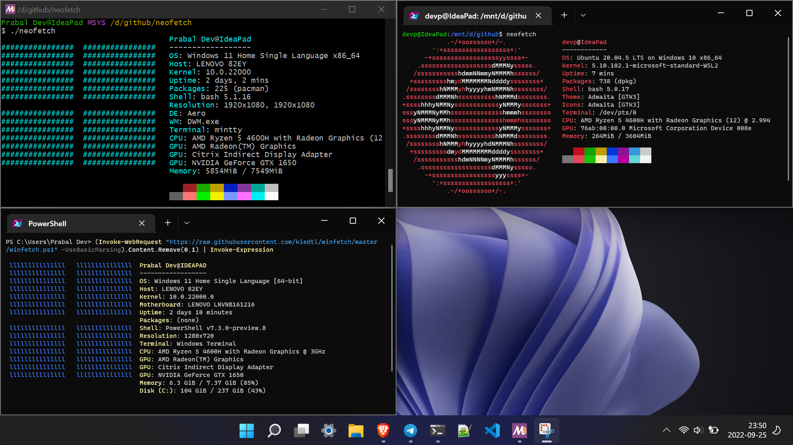

wsl --install
wsl --install -d <DistroName>
Starting docker daemon
sudo service docker start
Microsoft.DesktopAppInstaller_8wekyb3d8bbwe.msixbundle from their release.mingw to PATH (search from start menu Edit system enviroment variables or Edit system enviroment variables for your account). The path to bin would be C:\msys64\mingw64\bin if installed using msys2 as linked above.cmdTASKKILL /F /IM msedge.exe
TASKKILL /F /IM Code.exe
The first one kills all MS Edge browser instances, the second one does that for Visual Studio Code. The way to identify the name is to find it via Task Manager.
winfetch (a utility similar to neofetch on linux)(Invoke-WebRequest "https://raw.githubusercontent.com/kiedtl/winfetch/master/winfetch.ps1" -UseBasicParsing).Content.Remove(0,1) | Invoke-Expression

wslPossible errors like failure in name resolution for github (git push not working), etc. A workaround for this known issue is to edit /etc/resolv.conf and set nameserver to 8.8.8.8.